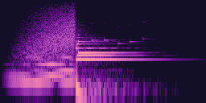
Reveal
Breathing noise riser into a bright E-major hit
PartyBox · reveal
Every cue is original: synthesized from code, layered (a transient, a body and a short room), levelled to the same loudness and kept under the true-peak ceiling. Tap a cue to hear it; each card names the PartyBox moment it can voice.
Joins, starts, turns, connections

Breathing noise riser into a bright E-major hit
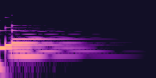
Warm rolled C-major arrival with a tine on top
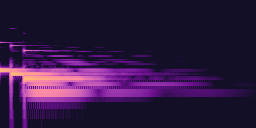
The join roll mirrored downward, darker
Sound-check bloom: C/G tine dyad, sub and a breath of air
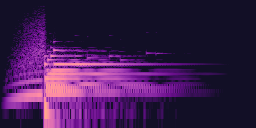
Short riser into a strummed C-major hit with sparkle
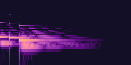
Relaxed IV → I cadence on mallets and pad
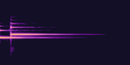
Gentle E → A tine call with a glass halo
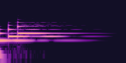
Rising A-major tine triad with a soft pad
Ticks and the last seconds
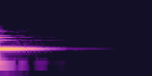
Woody clock tock on A4 with a soft sub; transposes cleanly per second
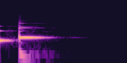
Double tock, the second brighter with a glass overtone
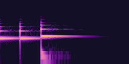
Three urgent tines (D D F) over woody knocks
Right, wrong, confirm, cancel
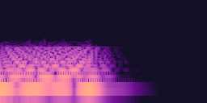
Warm low-passed game-show buzz, two detuned voices
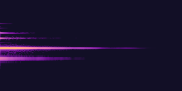
FM tine and glass bell on A5 with a warm undertone
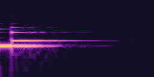
Small affirmative mallet pluck with a tine lift
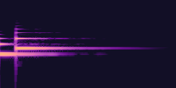
FM tines rising a fifth (C → G)
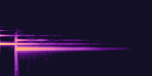
Muted tines falling a fifth (E → A)
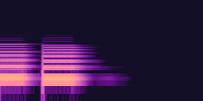
Two muted low pulses, soft and dark
Points, wins and bonuses
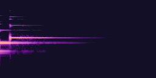
Two glassy pings a fifth apart over a soft low body
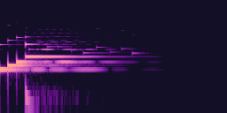
Rolled C-major mallet arpeggio, warm pad bloom, sparkle tail
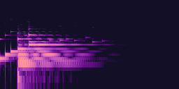
Mallet pickup into a full C-major bloom, melody tines, sparkle and air
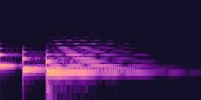
Gentle falling C-minor tines with a drooping held note
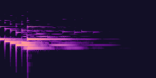
Pentatonic glass cascade down and back up, with sparkle
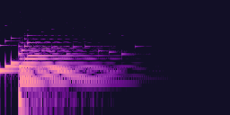
Mallet pickup into a Cmaj9 bloom with strummed tines and air
Dice, tokens and things landing
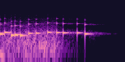
Thirteen seeded wooden clacks slowing down over a rolling rumble
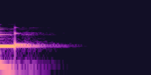
Wooden landing with a sub thump and a small settle bounce
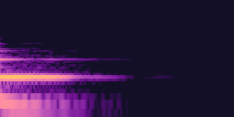
Soft felt-and-wood token hop
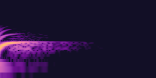
Round rising bubble pop with a tiny click
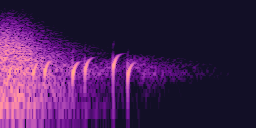
Falling filtered spray with rising droplet plips
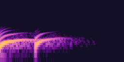
Elastic spring "boing" with a smaller second hop
Effects that grow, weaken or protect
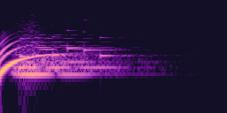
Rising FM chirp, sparkles and a fifth swelling underneath
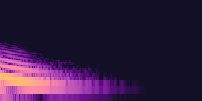
Low falling "womp" with a muffled thud
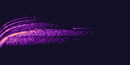
Two detuned shimmering sweeps flying across the stereo field
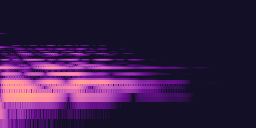
Warm humming A-major field with a glass strike
Fast rising C-major tine run over a climbing warm tone
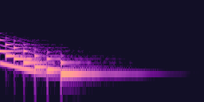
Slowing falling tine run with a sinking warm tone
Spectrograms: 1024-point Hann FFT, log frequency 47 Hz to 24 kHz, brighter is louder. Each WAV is the seed-1 master the test suite checks byte for byte. Open this file from disk or serve the folder with any static server; nothing loads from the network.